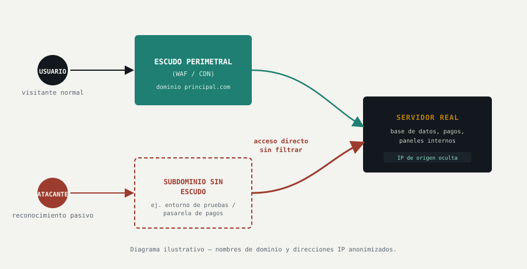
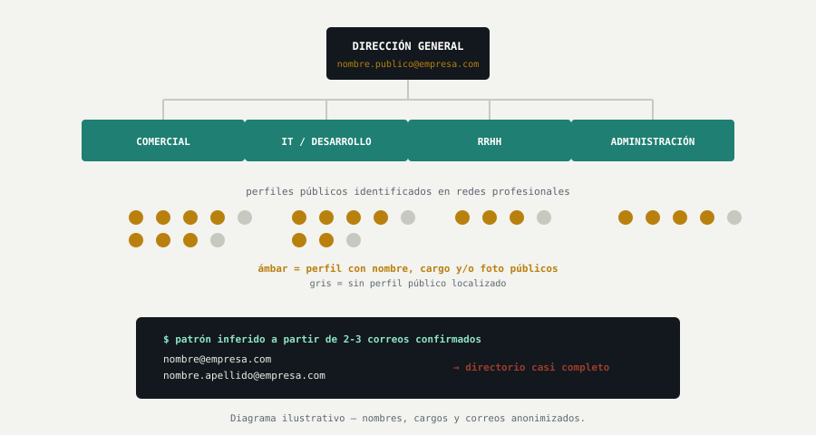

El ejercicio
Nadie tocó ningún sistema, y aun así se supo casi todo
El reconocimiento pasivo (OSINT) es la fase previa a cualquier ataque real: consiste en reunir toda la información posible sobre un objetivo usando solo fuentes públicas —registros de dominio, redes sociales, certificados de seguridad— sin enviar una sola petición sospechosa que pueda hacer saltar una alarma.
Es el equivalente a que alguien averigüe el horario de tu negocio, quién lo dirige y por dónde entra el suministro, simplemente mirando desde la acera. No ha roto nada, pero ya sabe por dónde entrar.
Hallazgo 1 — Escudo con huecos
El firewall protegía la puerta principal, pero no las ventanas laterales
La web principal de la empresa estaba correctamente protegida por un escudo de seguridad (un firewall de aplicaciones web) que filtra el tráfico antes de que llegue al servidor real. El problema no estuvo en ese escudo, sino en que otras puertas de la misma casa —un entorno de pruebas, un panel de gestión interno, la pasarela de pagos— apuntaban directamente a la dirección real del servidor, sin pasar por ese filtro en absoluto.

Por qué importa para la empresa
Da igual cuánto se invierta en el escudo de seguridad de la web principal si hay una puerta lateral sin vigilancia: un atacante no necesita romper nada, solo encontrar la puerta que ya está abierta y que suele ser, precisamente, la que gestiona pagos o datos internos.
Cómo se corrige
Auditar todos los subdominios de la empresa, no solo la web principal, y asegurarse de que los entornos de pruebas y las pasarelas críticas queden igual de protegidos —o completamente fuera del alcance público.
Hallazgo 2 — El mapa de la casa, disponible sin pedirlo
Antes de intentar nada, ya se sabía qué sistemas usaba la empresa por dentro
Con herramientas públicas y gratuitas de enumeración de dominios, se reconstruyó un inventario detallado de la infraestructura interna: entornos de desarrollo, un panel de administración, y la tecnología exacta detrás de la tienda online —todo sin generar una sola alerta, porque consultar registros públicos no es, técnicamente, un ataque.
Por qué importa para la empresa
Esta información convierte a cualquier persona con conocimientos básicos en alguien con el mismo nivel de detalle que un empleado del departamento de sistemas, antes incluso de intentar entrar en ningún sitio.
Cómo se corrige
Tratar la simple visibilidad pública de la infraestructura como un riesgo en sí mismo, no como un detalle menor: cuanto menos se pueda averiguar desde fuera sobre los sistemas internos, menos preparado llega un posible atacante.
Hallazgo 3 — El manual técnico, publicado sin querer
Un perfil profesional bien redactado contó toda la arquitectura interna
El perfil público de un empleado del área técnica, pensado para lucir bien ante futuros reclutadores, describía con detalle un proyecto real: qué lenguajes de programación, bases de datos y herramientas usa la empresa en producción actualmente. Nada de eso se obtuvo hackeando nada —estaba a la vista de cualquiera.

Por qué importa para la empresa
Este tipo de información no se filtra por un fallo de seguridad, sino por una costumbre normal y bienintencionada: mostrar experiencia. El problema es que, sumada a otros datos, le da a un atacante el equivalente a una visita guiada por el backend.
Cómo se corrige
No se trata de prohibir que el personal muestre su trabajo, sino de revisar como empresa qué nivel de detalle técnico es razonable tener público, especialmente en perfiles vinculados directamente a la marca.
Hallazgo 4 — El organigrama completo, listo para un correo falso
Con nombres, cargos y el patrón de correo, cualquiera puede escribir “de parte del CEO”
Cruzando los perfiles públicos del personal (nombre, cargo, en algunos casos foto) con un par de direcciones de correo corporativo ya conocidas, fue posible deducir el patrón exacto con el que la empresa construye sus correos electrónicos —y, con eso, reconstruir un directorio casi completo, dirección general incluida.
Por qué importa para Recursos Humanos
Esta es exactamente la materia prima de los fraudes de suplantación del CEO, el phishing dirigido y las estafas de nómina: alguien que sabe el nombre exacto del director, su correo, y quién trabaja en qué departamento, puede hacerse pasar por él de forma convincente. Es un riesgo de personas, no solo de sistemas —y por eso es un tema que compete directamente a RRHH, no solo a TI.
Cómo se corrige
Reducir cuánta estructura organizativa y qué correos directos de dirección quedan públicamente visibles; formar al personal —especialmente a quienes gestionan pagos o nóminas— con ejemplos reales de este tipo de engaño; exigir un segundo canal de verificación para cualquier instrucción sensible recibida por correo, venga de quien venga.
En resumen
Por qué esto importa aunque nadie haya intentado entrar todavía
Ninguno de estos hallazgos requirió lanzar un solo ataque, adivinar una contraseña o explotar una vulnerabilidad técnica: toda la información se obtuvo de fuentes abiertas y gratuitas, sin que la empresa lo notara ni pudiera detectarlo. Ese es justamente el punto: la fase de reconocimiento pasivo no aparece en ningún registro de seguridad, pero deja a quien la realiza con un nivel de conocimiento equivalente al de alguien con acceso interno —antes de que la fase activa siquiera empiece.
4 categorías de exposición documentadas · 0 alertas generadas durante el reconocimiento · recomendaciones de mitigación entregadas para cada una